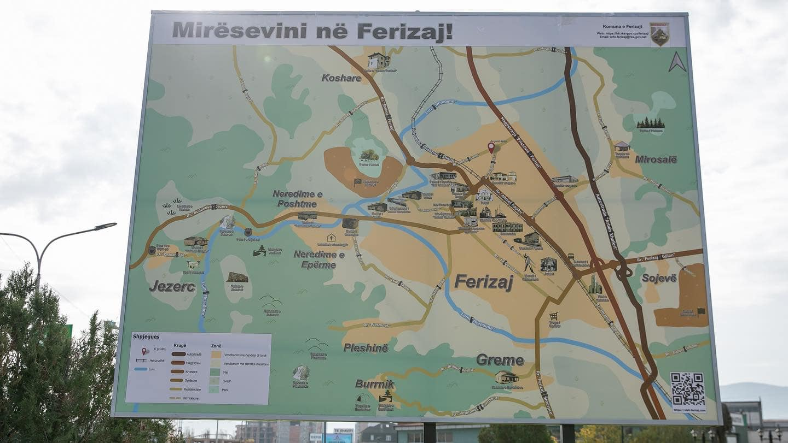
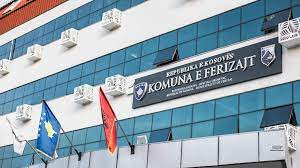
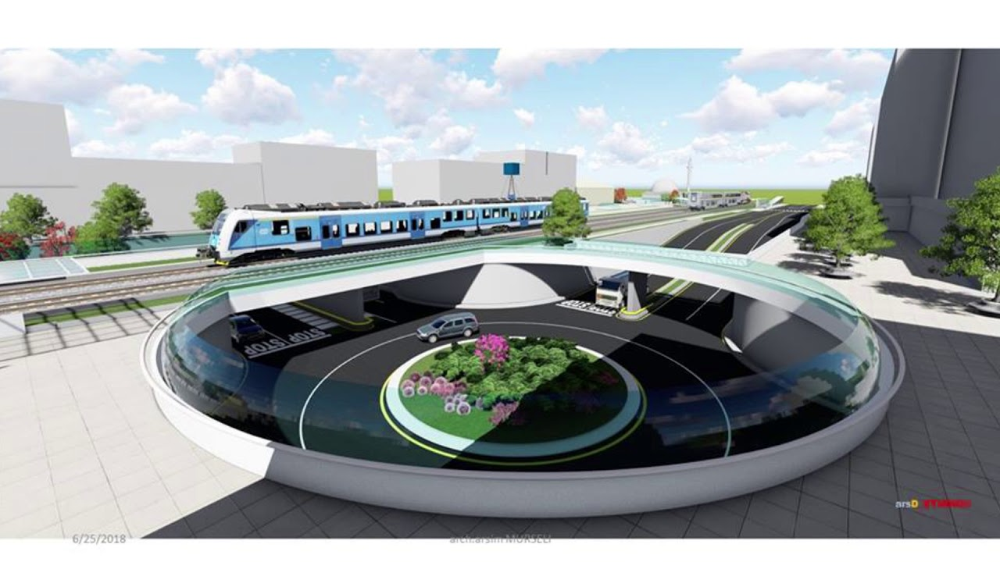
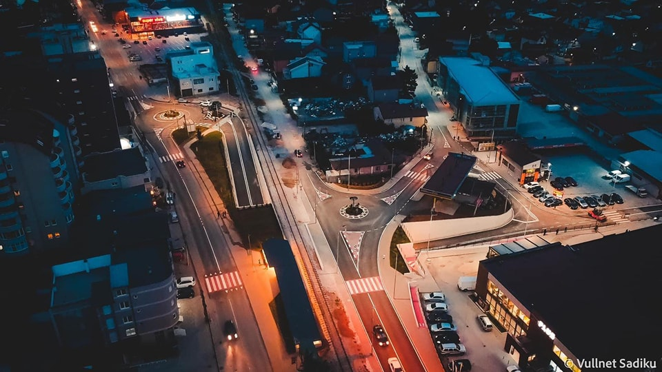
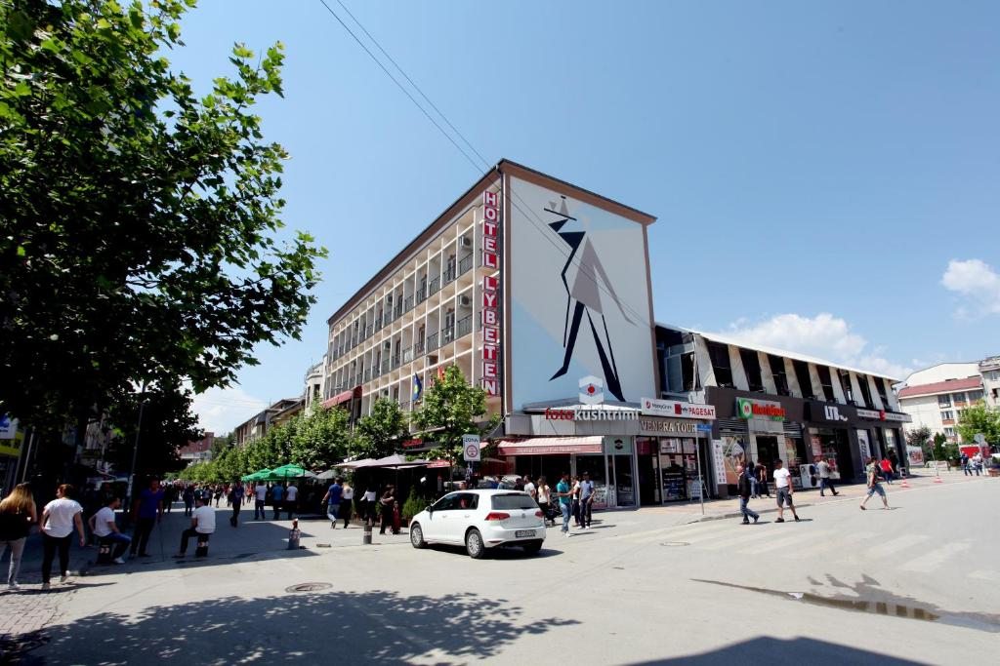

Rreth nesh
Kjo Webfaqe është krijuar me të vetmin qëllim ndihmimin e të
gjithë atyre të cilët dëshirojnë ta vizitojnë qytetin e Ferizajt .
Website ofron mundësinë që kushdo që e shfleton të mund të
njoftohet me vendet turistike të cilat gjendën në qytetin e
Ferizajt, konkretisht vizitori i kësaj faqe mund të informohet se
cilat janë pikat turistike më interesante , informacione
historiko-gjeografike rreth tyre dhe lokacionet se ku gjenden ato
. Qyteti i Ferizajt është themeluar në vitin 1873 nga Feriz
Shashivari , është i vendosur në juglindje të Kosovës dhe gjendet
37km larg kryeqendrës së Kosovës , Prishtinës.
Karakteristikat e qytetit:
- Posedon sipërfaqe rreth 3452
- Posedon mbi 200 mijë banorë
- Posedon 4 qyteza si pjesë regjionale
- Posedon 47 fshatra(vendbanime)
- Ka kodin postal 70000
- Jetojnë nacionalitete të ndryshme
- Jetojnë anëtarë të feve të ndryshme
etj.
Karakteristikat e qytetit:
- Posedon sipërfaqe rreth 3452
- Posedon mbi 200 mijë banorë
- Posedon 4 qyteza si pjesë regjionale
- Posedon 47 fshatra(vendbanime)
- Ka kodin postal 70000
- Jetojnë nacionalitete të ndryshme
- Jetojnë anëtarë të feve të ndryshme
etj.





Eksploroni pamje të qytetit nga qielli
Na Kontaktoni
af58102@ubt-uni.net
va57264@ubt-uni.net
Website zyrtar i Komunës se Ferizajt:
https://kk.rks-gov.net/ferizaj/
Kontakti i drejtorise per turizem:
038 200 46010
@2022 | Te gjitha të drejtat e rezervuara